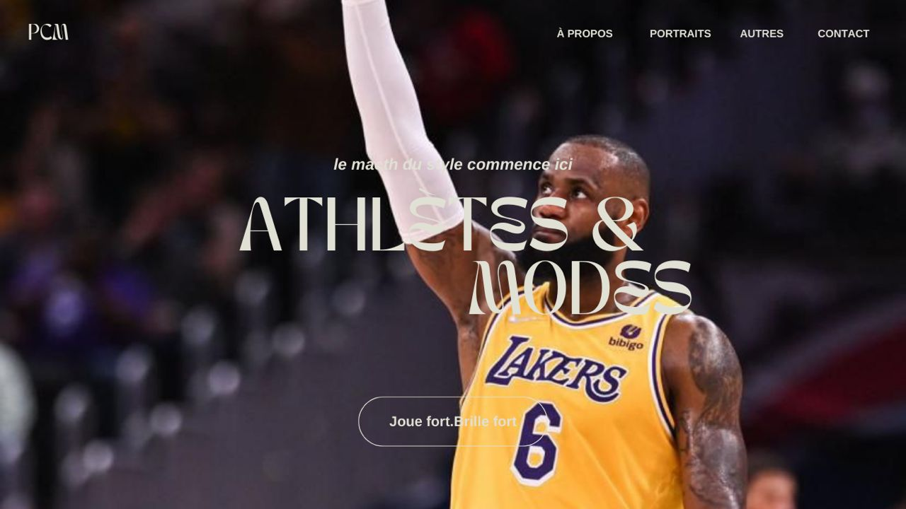
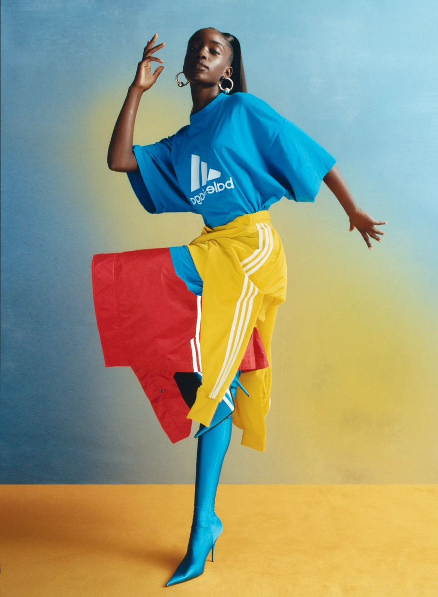
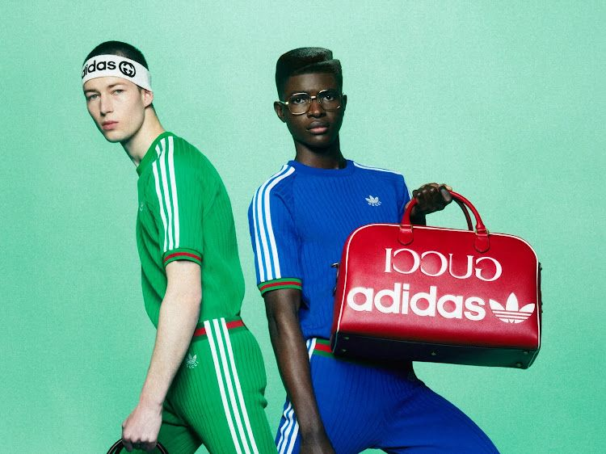
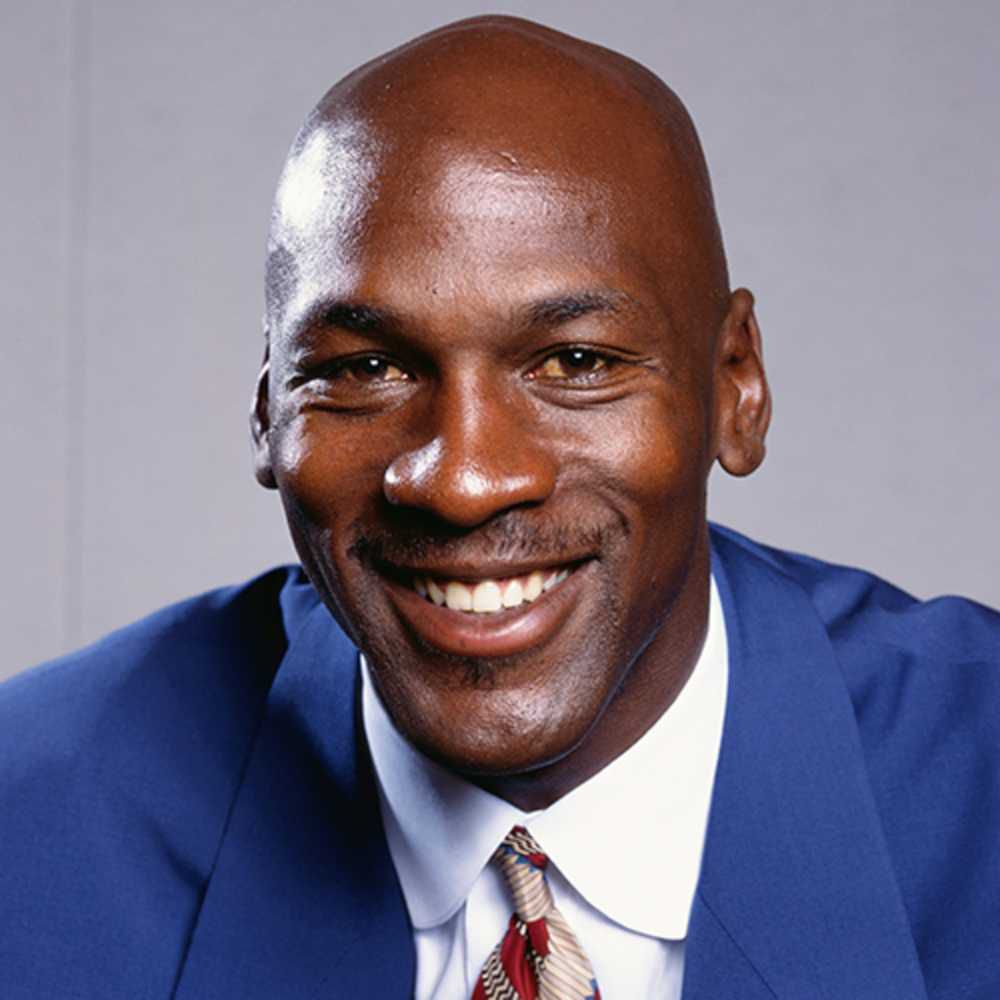
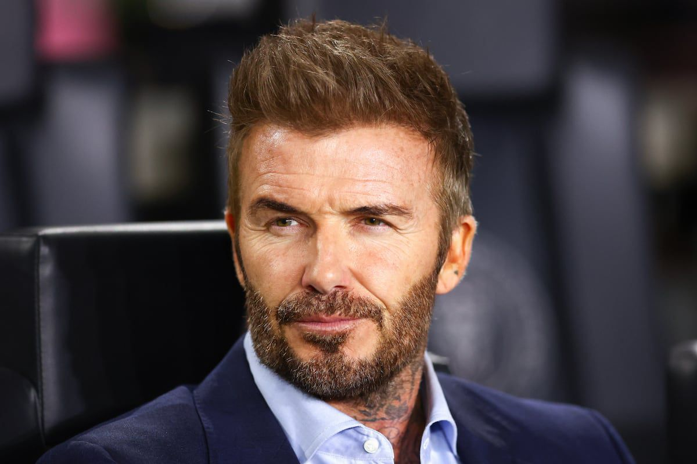
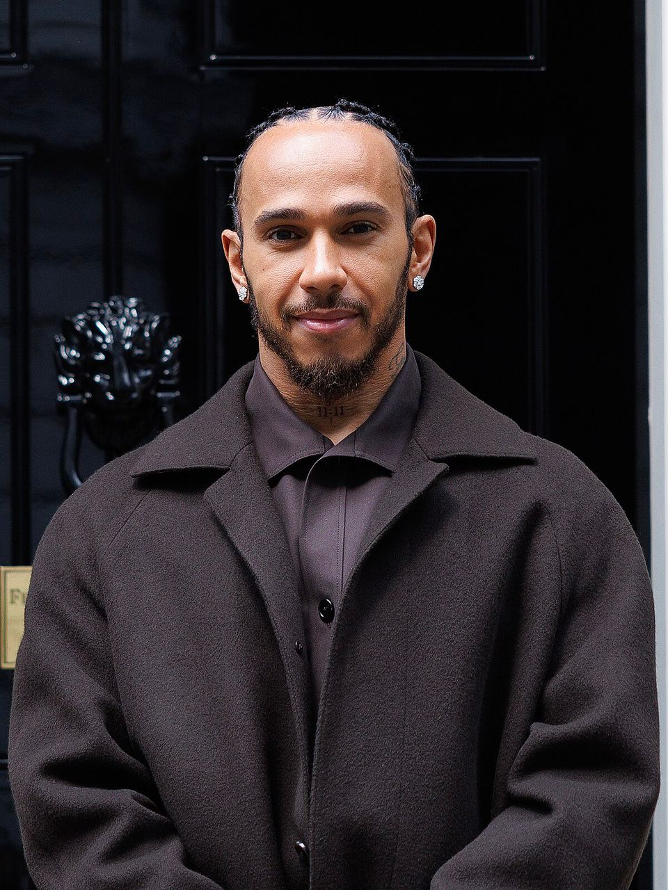
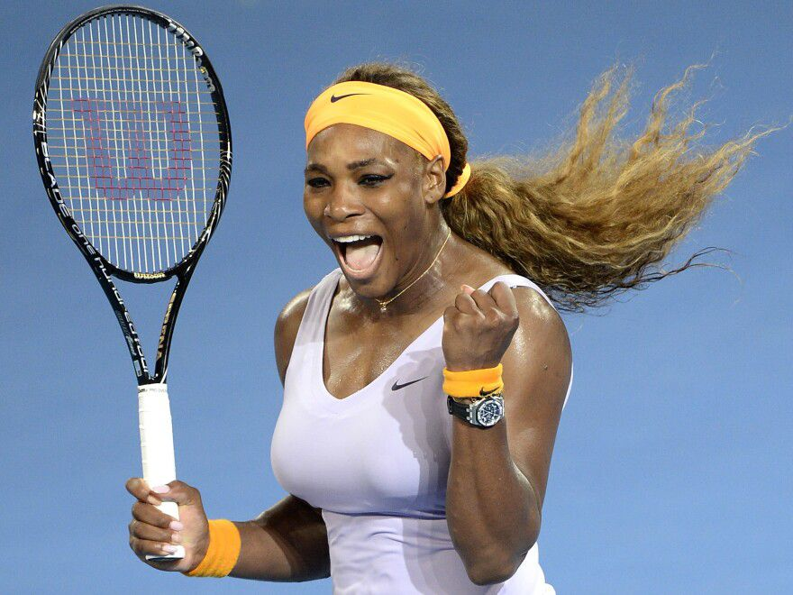
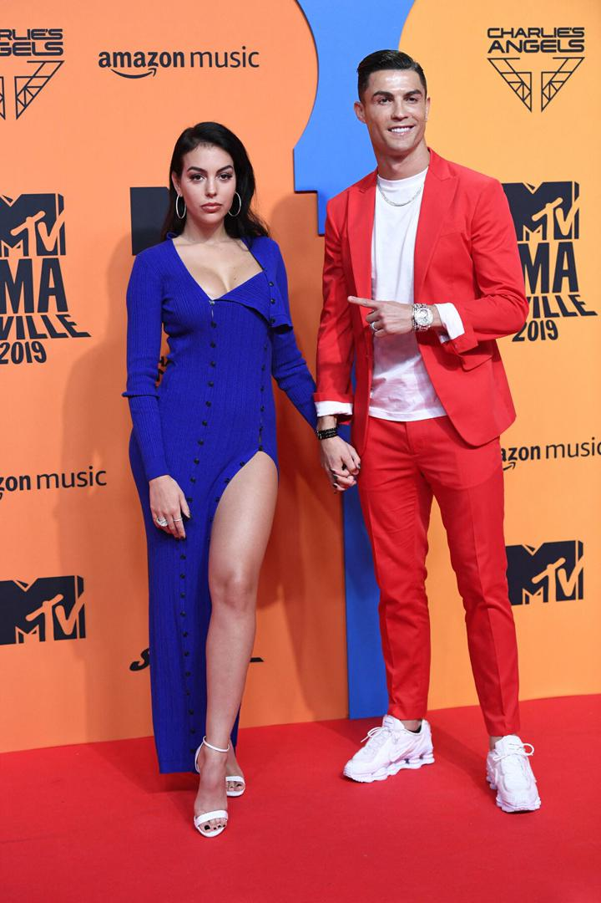

prêt (e) pour le show ?
Bienvenue dans un univers où le sport ne s’arrête pas au coup de sifflet final, où les podiums ne sont pas toujours en métal, et où les trophées peuvent aussi être faits de tissu, de paillettes et de flashs d’appareils photo. Ici, nous allons plonger dans une réalité fascinante : celle des athlètes qui, au fil du temps, ont su franchir les lignes du terrain pour fouler les tapis rouges et les podiums de la haute couture.

Il y a encore quelques décennies, on associait un sportif à son maillot, à ses chaussures de compétition et, éventuellement, à une marque d’équipement sportif. Point final. Mais aujourd’hui, ce serait réduire leur influence à une image beaucoup trop simpliste. Les grands noms du sport ne se contentent plus de marquer des points ou de battre des records : ils façonnent des tendances, lancent des marques, et influencent ce que nous portons, de la rue aux galas les plus prestigieux.

Prenons un exemple que même ta grand-mère connaît : Michael Jordan. Cet homme n’a pas juste révolutionné le basket, il a créé avec Nike une marque qui dépasse largement le cadre du sport. Les Air Jordan, c’est plus qu’une paire de chaussures : c’est un symbole, un objet de désir, un morceau de culture populaire. À partir de là, le chemin était tracé. Les sportifs pouvaient être bien plus que des athlètes : ils pouvaient devenir des icônes.

Et puis, il y a eu David Beckham. Ce n’est pas juste un footballeur, c’est un phénomène. Avec son style impeccable, ses coiffures qui faisaient la une, et ses campagnes pour Armani, il a prouvé qu’un sportif pouvait rivaliser avec les mannequins professionnels sur les affiches géantes des grandes capitales. Beckham, c’est un peu la passerelle parfaite entre le vestiaire et le défilé.

Aujourd’hui, la liste est longue : Serena Williams lançant sa propre ligne de vêtements, Lewis Hamilton collaborant avec Tommy Hilfiger, Naomi Osaka devenant égérie Louis Vuitton, Cristiano Ronaldo avec sa marque CR7… Tous ont compris que leur image ne s’arrête pas au moment où ils rangent leur équipement. Leur influence déborde, touche la musique, le cinéma, et bien sûr, la mode.


Il y a aussi la force des réseaux sociaux. Avant, un athlète devait passer par les médias traditionnels pour toucher le public. Aujourd’hui, avec Instagram, TikTok et Twitter, ils ont un lien direct avec des millions de personnes. Ils peuvent partager leurs entraînements le matin, leurs repas le midi et… leurs looks le soir. Résultat : chaque photo, chaque tenue, chaque collaboration devient un événement. Et dans une époque où tout se partage et se commente, la mode devient un terrain de jeu supplémentaire pour ces champions.
Et soyons honnêtes : il y a aussi un petit côté rêve dans tout ça. Voir notre joueur ou joueuse préféré(e) dans un costume parfaitement taillé ou une robe haute couture, c’est un peu comme découvrir un personnage dans un autre univers. Ça casse la routine, ça montre une autre facette d’eux, et ça nous inspire à soigner notre propre style. Alors, que tu sois fan de sport, accro à la mode ou juste curieux·se de comprendre comment ces mondes s’emmêlent, prépare-toi à voyager entre stades et podiums. Ici, pas de hors-jeu ni de fashion faux-pas, juste des histoires inspirantes, des looks marquants, et des trajectoires qui prouvent qu’un champion peut briller partout… même loin de son terrain de jeu habituel.

Frise Chronologique
- 1900 - Introduction des premiers vêtements sportifs modernes.
- 1920 - Popularisation des tenues de sport féminines dans les compétitions.
- 1960 - Fusion progressive entre la mode urbaine et les vêtements sportifs.
- 1984 - Apparition des premières collections sport de grands créateurs.
- 2000 - Explosion du phénomène "sportwear" dans la mode mondiale.
- 2010 - Influence massive des réseaux sociaux sur les tendances sport & mode.